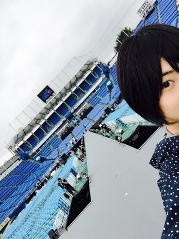
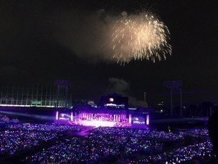
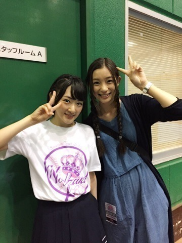
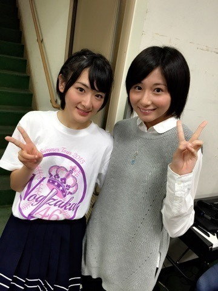

| 2015/09 01 Tue | 生駒里奈 いい夏だったな☀︎ |
生駒ですヽ(・∀・)ノ
8月5日から始まった
乃木坂46真夏の全国ツアー2015
がついに昨日幕を閉じました。
リハから振り返るともっと長かったなぁ。
でもたったの２か月くらいの期間の出来事だったんだと思うと
本当に濃い時間を過ごせたと思います。
今回、どのLIVEも生駒が頭煽らせて頂きました。
めちゃ緊張したけど、めちゃ楽しかったヽ(・∀・)ノ
生駒ちゃんって気持ちでいたら緊張して倒れると思ったので、
その一瞬は大物ロックスターの気持ちになって頑張りました笑
あ〜ヽ(・∀・)ノ
ほんとに素晴らしい体験をさせていただきました。
今回のツアーでメンバー全員が確実に成長したと思うし、
個性のぶつかり合いってこんなに面白いものを生み出すのだと知りました！
神宮最終日、
Wアンコールを頂きました。
ステージに戻って、メンバー全員でファンの皆さんの声を聞きました。
自然と涙が溢れてきました。
私達の気持ち伝わったんだっ！！
自信を持ってそう思いました！！
あの景色、音はずっと忘れません！！
終演後、
メンバーもスタッフさんもみんな笑顔で溢れていました。
ファンの皆さんもきっと笑顔でいるのかなぁと思いました。
楽しかった！！
本当にほんとに素晴らしいLIVEでしたヽ(・∀・)ノ
また、LIVEやる時はこのレベル以上のものをお届け出来るようにしないとねヽ(・∀・)ノ

私がステージに出て1番最初に見る景色を皆さんにもお裾分けヽ(・∀・)ノ

今年も花火が夜空に咲きましたヽ(・∀・)ノ

梨花さん〜ヽ(・∀・)ノ
お姉ちゃん来てくださった〜ヽ(・∀・)ノ！！
チームジャンポリ
チームピラメキーノ
チームコープスパーティー
チーム初森ベマーズ
などなどいつもお世話になっている皆さんが来てくださったよ〜ヽ(・∀・)ノ
なんかめちゃ嬉しかったヽ(・∀・)ノ

れなりんも来たよ〜ヽ(・∀・)ノ
さぁ、
次のステージへ。
ありがとう、、生駒ちゃん。
頑張ろうね、生駒ちゃん。
へばなっ☆彡